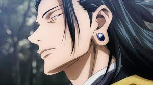

About Suguru
Suguru Geto (夏げ油とう傑すぐる Getō Suguru?) is an antagonist in both the Jujutsu Kaisen series and its prequel Jujutsu Kaisen 0: Jujutsu High. He was originally a student of Masamichi Yaga's alongside Satoru Gojo and Shoko Ieiri at Tokyo Jujutsu High. His experiences as a jujutsu sorcerer bred a deep hatred for non-sorcerers, leading to an incident where Suguru massacred over a hundred civilians in a single night. He was expelled from Jujutsu High and came to be known as the worst of all curse users.
He naturally feels above humans
Abilities
- Cursed energy manipulation
- Innate technique
- Cursed Tools
- Barrier technique
Personality
Suguru Geto hated non-sorcerers, usually referring to them as "monkeys". He felt sorcerers are the superior race and humanity's next stage of evolution. He was smug and extremely condescending towards normal humans, using fake personas to lure in vulnerable people who were cursed. Suguru found non-sorcerers disgusting enough to spray himself in order to disinfect the "monkey stench". He believed monkeys only have two roles in association with him, money-collecting monkeys and curse-collecting monkeys. If they weren't fulfilling their roles, Suguru would gladly allow curses to kill them without any remorse.